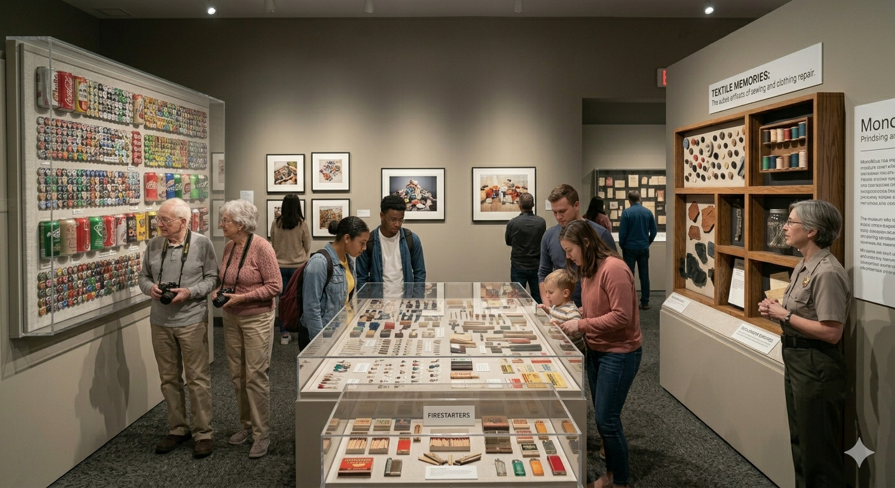
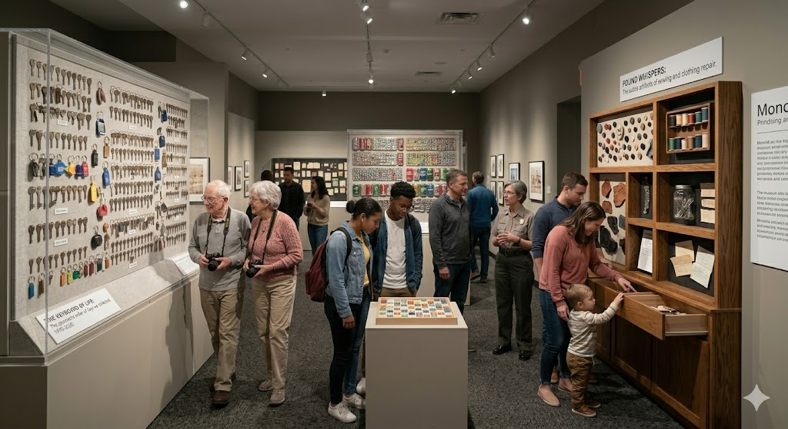
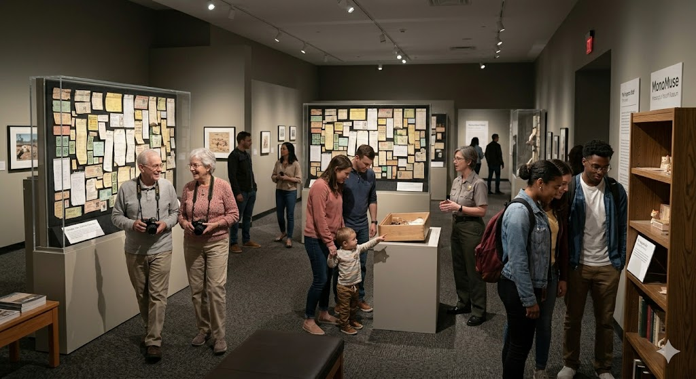

About Us
Open Times
Monday - Friday: 10am - 5pm
Saturday - Sunday: 11am - 6pm
Location
123 Main Street, Pyttsbourgh, PAA 15213
Contact
Email: monomuse@gmail.com
Phone: (+1) 010-1010-1010
Mission Statement
MonoMuse exists to give ordinary objects a moment of attention they would never receive anywhere else. By collecting and displaying items most people would normally throw away—old receipts, ticket stubs, instruction manuals, and other small artifacts—the museum invites visitors to reconsider the quiet role everyday objects play in documenting daily life. With a mix of curiosity and gentle humor, MonoMuse treats the mundane with the same seriousness usually reserved for masterpieces.
Milestones
-
2026 - Founding and Opening
MonoMuse opens with a small but committed collection of everyday items, including its first featured object: a slightly faded grocery receipt from 1982.
-
2028 - The Everyday Archive
The museum launches a public archive where visitors can donate their own unremarkable objects, quickly filling the collection with ticket stubs, packaging, manuals, and forgotten notes.
-
2032 - Community Object Project
MonoMuse begins accepting objects submitted with short personal stories, proving that even the most ordinary items can carry unexpected meaning.


